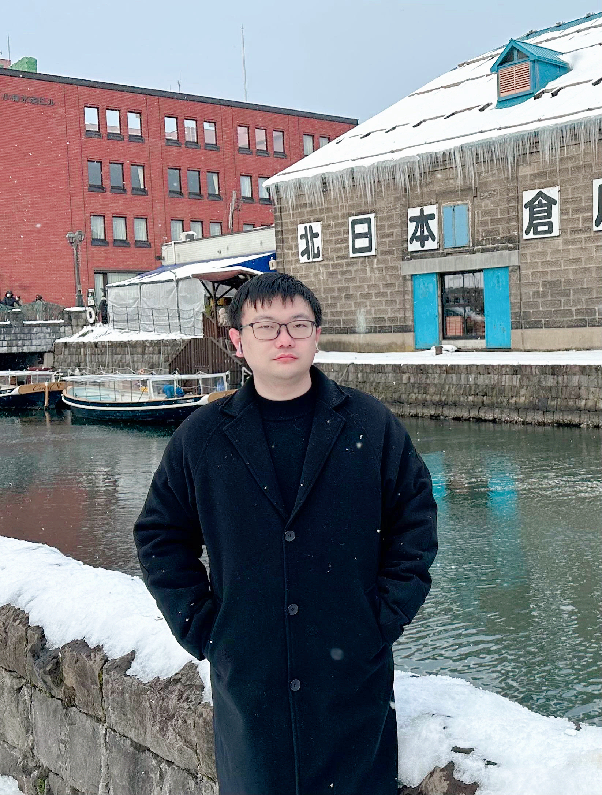

Welcome to Jianqi Chen's Homepage
|  |
Dr. Jianqi Chen 陈建琪 |

About me
I received a B.S. degree in Automation from Chu Kochen Honors College, Zhejiang University in 2014, and a Ph.D. degree in Electrical Engineering from the Department of Electrical Engineering, City University of Hong Kong in 2020. I was with the Department of Electronic and Computer Engineering, Hong Kong University of Science and Technology, as a Postdoctoral Researcher. I am currently an Associate Professor at the School of Robotics and Automation, Nanjing University.


Research Interests
Cross of control and learning.
Robotic arm collaboration.
Networked control systems.
Security over cyber-physical systems.
Phase theory over large-scale networks.
Time-Delay systems.
Robust PID control.
Teaching
0810Z1B001 矩阵理论基础 （2024/2025 Spring）
0810Z1C007 滤波理论与方法 （2024 Fall）
Recent News
I am always looking for enthusiastic and self-motivated Ph.D. and M.Sc. students with expertise in control and beyond. Please email me for opportunities to get involved in our research.
诚挚欢迎对控制，机器学习，机械臂及相关领域充满热情和自驱力的博士与硕士研究生加入我们的团队。如有兴趣与我们一同开展研究，请通过电子邮件与我联系。
课题组长期开设专职科研岗位（助理研究员或副研究员），需要有相关领域的博士学位且发表过领域高质量论文。聘期两至三年，待遇参照南大大学相关标准（人力资源处网站《南京大学专职科研系列岗位聘用办法（修订稿）》文件）。聘期结束后，表现优异和成果优秀者，可推荐申请应聘南京大学教职。如有兴趣，请通过电子邮件与我联系。
欢迎对机械臂控制领域感兴趣的本科生入组学习，进行科研训练（包括大创/毕设）。如有兴趣与我们一同开展研究，请通过电子邮件与我联系。
Opening! I currently have quota for the PhD and M.Sc. programs, which are open to students who intend to pursue doctorate and master degrees in 2026. If you are interested in joining my research team, please email me, and I will get back to you as soon as possible.
招收26年入学的硕士和博士，其中硕士聚焦机械臂控制相关课题。如果你有兴趣加入我的研究团队，请给我发电子邮件联系，我会尽快回复。
[2025-10] Dr. Ding Zhang from HKUST and CUHK(SZ) is visiting our group.
[2025-09] Our paper "A Cyclic Small Phase Theorem" has been accepted by IEEE Transactions on Automatic Control as a Full paper.
[2025-09] Welcome Mr. Runkun Li, Mr. Yunlong Wang, Mr. Chen Chen, and Mr. Yu Ma to the group!
[2025-08] Rrof. Mengmou Li from Hiroshima University visited our school and delivered a talk "First-Order Projected Accelerated Algorithms".
[2025-08] Prof. Zhao (NJU) and I are co-organizing a special session, "Advanced Control Theory and Applications of Intelligent Systems," at the 5th International Conference on Control Theory and Applications (ICoCTA 2025). We welcome submissions and look forward to seeing you in Chengdu!
[2025-08] Dr. Anqi Dong from KTH visited our school and delivered a talk "Optimal Transport with Flux Constraints: Theory and Applications".
[2025-07] Our two papers have been accepted by the 64th IEEE Conference on Decision and Control (CDC) 2025.
[2025-06] We are delighted to announce that Mr. Chen Chen, who will soon join our group as a PhD student, has been granted the South China University of Technology University-Level Outstanding Undergraduate Thesis Award! The title of thesis is 《多输入多输出线性时不变系统的反馈稳定性:从增益到相位》. Big Congratulation!
[2025-06] Prof. Yin (Institute for the Environment and Health) and I received the Project "新一代智能紫外消毒机器人研发—未来流行病防控关键技术攻关" supported by 南京大学青促会.
[2025-04] Prof. Chao Chen from The University of Manchester visited our center and delivered a talk "The Hilbert Distance between LTI Passive Systems".
[2025-03] Prof. Guofeng Zhang from PolyU HK visited our center and delivered a talk "Linear quantum systems: poles, zeros, invertibility and sensitivity".
[2025-01] I attended the Phase Theory Winter Camp, in CUHKSZ, Shenzhen.
[2024-12] Prof. Wenxiao Zhao from CAS visited our center and delivered a talk "基于凸优化的随机非线性系统辨识算法和收敛性分析".
[2024-12] Our paper "Robust Stability and Stabilizability Conditions for Time-Delay Systems Under Stochastic Uncertainties" has been accepted by IEEE Transactions on Automatic Control.
[2024-12] I attended the 18th International Conference on Control, Automation, Robotics and Vision (ICARCV 2024), in Dubai, UAE and gave one talk.
[2024-12] I have been promoted to tenure-track associate professor at the Center for Advanced Control and Smart Operations (CACSO), Nanjing University.
[2024-11] I received the Project "抵抗复杂摄动的系统控制方法研究" supported by the National Natural Science Foundation of China.
[2024-11] Our paper "Robust Stabilization and Optimal Margins of Unstable Systems with Mixed Gain/Phase Perturbations" has been accepted by IEEE Transactions on Automatic Control.
[2024-10] Our paper "Error Dynamics in Affine Group Systems" has been accepted by IEEE Transactions on Automatic Control.
[2024-10] Our book chapter "Delay Margin" has been accepted by Encyclopedia of Systems and Control Engineering, Elsevier.
[2024-10] Prof. Weizhou Su from South China University of Technology visited our center and delivered a talk "随机信道时延建模与有色均方小增益定理".
[2024-10] Prof. Tongwen Chen from University of Alberta visited our center and delivered a talk "From Sampled-Data to Event-Triggered Control".
[2024-10] Prof. Shinji Hara from University of Tokyo visited our center and delivered a talk "Glocal (Global/Local) Control for Networked Dynamical Systems with Physical Interactions: from Theory to Practice".
[2024-10] Our paper "Phase Preservation of N-Port Networks under General Connections" has been accepted by IEEE Transactions on Automatic Control as a Full Paper.
[2024-09] I received the Project "多端口大规模电路网络的系统相位保持性研究" supported by the National Natural Science Foundation of China.
[2024-09] Our paper "Clock Synchronization with Unknown and Unmodeled Disturbances over Distributed Networks" has been accepted by IEEE Transactions on Control of Network Systems as a Full Paper.
[2024-08] I attended the 26th International Symposium on Mathematical Theory of Networks and Systems (MTNS) 2024 in Cambridge, UK and gave two talks.
[2024-08] Our paper has been accepted by the 18th International Conference on Control, Automation, Robotics and Vision (ICARCV) 2024.
[2024-07] Our paper "Unknown Input Filtering under Full Accessibility Attacks" has been accepted by Automatica.
[2024-07] Our two papers have been accepted by the 63rd IEEE Conference on Decision and Control (CDC) 2024.
[2024-06] Our paper "Maximization of Gain/Phase Margins by PID Control" has been accepted by IEEE Transactions on Automatic Control as a Full Paper.
[2024-05] Our two papers have been accepted by the 26th International Symposium on Mathematical Theory of Networks and Systems (MTNS) 2024. I will also organize an invited session titled "Issues in Networked Consensus Control" at this conference.
[2024-05] Prof. Junfeng Wu and Dr. Guangyang Zeng from CUHK-Shenzhen visited our center and engaged in an academic discussion with Prof. Kemin Zhou and other faculty members.
[2024-05] Prof. Geir E. Dullerud from the University of Illinois Urbana-Champaign visited our center and delivered a talk "Learning for Safety and Control in Dynamical Systems".
[2024-04] 2024 Advanced Control Taihu Forum was successfully inaugurated at the Suzhou Campus of Nanjing University! Prof. Donghua Zhou and Prof. Keming Zhou co-organized the event, with eight esteemed experts delivering plenary talks.
[2024-04] I am serving as the Publication Chair of the 2024 4th International Conference on Control Theory and Applications (ICoCTA 2024), which will be held in Hangzhou, China on October 18-20, 2024. Looking forward to seeing you in Hangzhou!
[2024-04] Prof. Li Qiu, my Postdoc supervisor from HKUST, visited our center and engaged in an academic discussion with Prof. Kemin Zhou and other faculty members.
[2024-03] Our paper "Small-Gain Criteria for Mean-Square Stability of Random Delay Systems" has been accepted by Automatica.
[2024-03] I have taken on the role of a tenure-track assistant professor at the Center for Advanced Control and Smart Operations (CACSO), Nanjing University.
[2024-02] Our paper "Mean-Square Stability Radii for Stochastic Robustness Analysis: A Frequency-Domain Approach" has been accepted by IEEE Transactions on Automatic Control as a Full Paper.